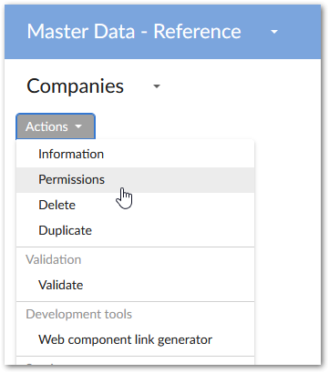
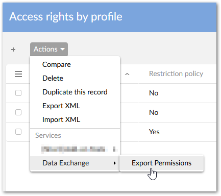
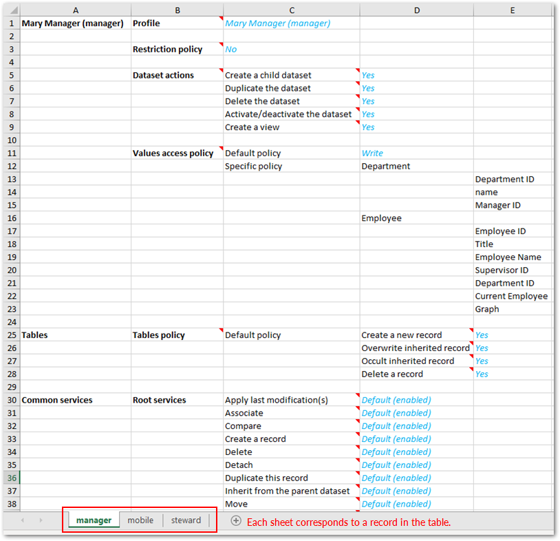

The add-on allows you to export a dataset's permission settings data to an Excel file. Each tab and tab order in the exported file corresponds to the records and order in the Access rights by profile table.
To export a dataset's permission settings data:
Navigate to the desired dataset.
From the dataset's Actions menu, select Permissions.

From the Access rights by profile table's Actions menu, select Data Exchange > Export Permissions.

Optionally, update the file name and then select Export.
The image below shows an example of an exported file:
